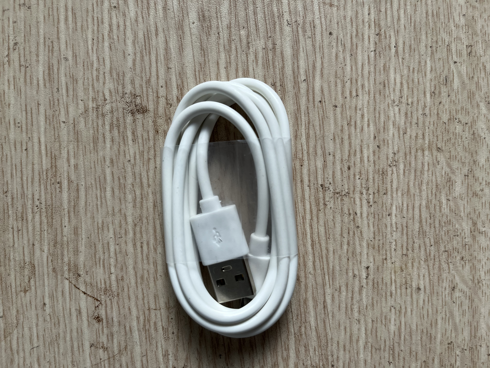
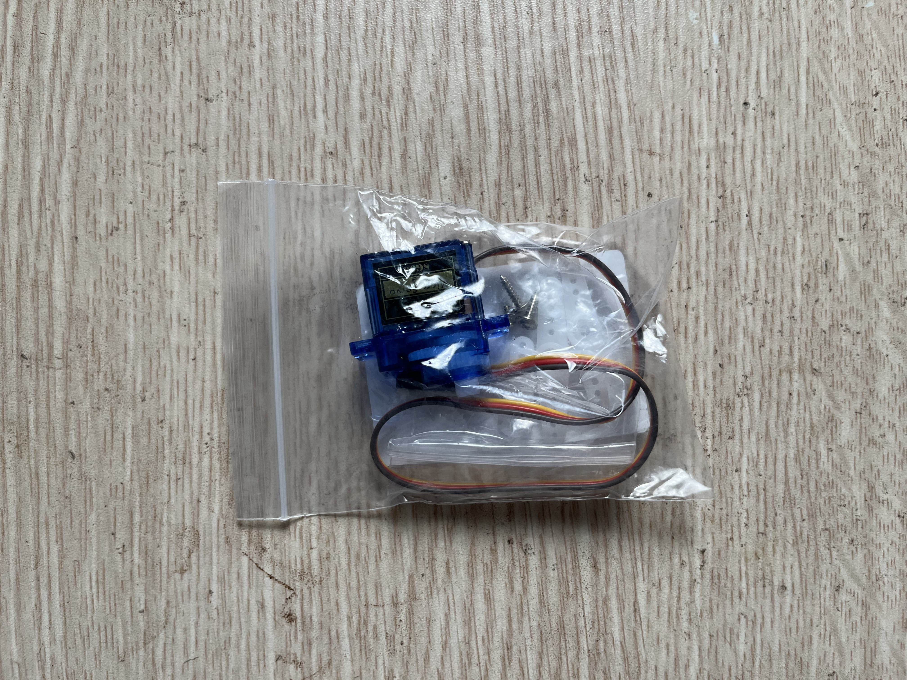

P8 Web server
ESP32 tự phát Wi-Fi AP, chạy HTTP server, và cho điện thoại bật/tắt onboard LED GPIO2. Breadboard để trắng.
An toàn
Mặc định P8 không cắm dây ngoài: chỉ ESP32 qua USB. GPIO ESP32 là logic 3.3V; không đưa 5V vào chân GPIO. Nếu thử servo tùy chọn, servo dùng nguồn 5V riêng và GND phải nối chung với ESP32.
Ảnh linh kiện




Linh kiện dùng thế nào
| Linh kiện | Vai trò |
|---|---|
| ESP32 | Access point Wi-Fi, HTTP server, và controller GPIO. |
| Onboard LED GPIO2 | Actuator mặc định, không cần cắm LED ngoài. |
| Điện thoại/laptop | Client mở web page và gửi HTTP request. |
| Servo SG90 tùy chọn | Slider web có sẵn route GPIO18; firmware chỉ phát PWM khi bạn dùng slider và chỉ nên thử khi có nguồn 5V riêng. |
Board map
Chi tiết: boards/p08.md. P8 mặc định là board trống: không cắm ESP32 lên MB102, không nối rail, không cắm LED ngoài.
Kết nối duy nhất: USB máy tính → ESP32. Onboard LED nằm trên chính ESP32, không có tọa độ breadboard.
Các bước làm
- Rút ESP32 và mọi dây khỏi breadboard; để MB102 trắng.
- Cắm ESP32 vào USB máy tính.
main.cppđang chọnp08_setup/p08_loop.- Chạy
pio run -t upload, rồipio device monitor. - Điện thoại kết nối Wi-Fi
RobotLab-P8, mật khẩurobotlab8. - Mở
http://192.168.4.1, bấm ON/OFF/TOGGLE và nhìn LED onboard GPIO2.
Atomic trace
- Nút web gọi
fetch('/api/led?state=toggle'). - ESP32 nhận HTTP request trong
server.handleClient(). p08HandleLed()gọip08WriteLed().digitalWrite(2, HIGH/LOW)đổi mức logic 3.3V trên GPIO2.- Onboard LED sáng/tắt; breadboard không có dòng điện chạy qua.
Hoàn thành khi
- Điện thoại mở được web page ESP32 tại
192.168.4.1. - Bật/tắt được onboard LED GPIO2 từ browser.
- Bạn hiểu ESP32 đang vừa là firmware device, vừa là Wi-Fi access point, vừa là HTTP server nhỏ.